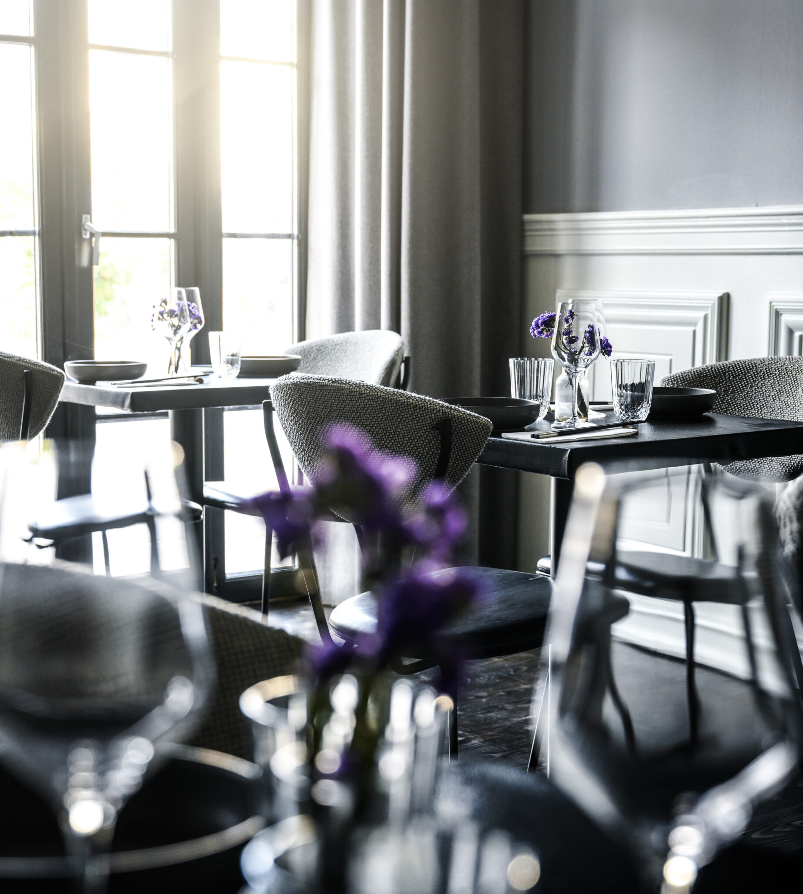
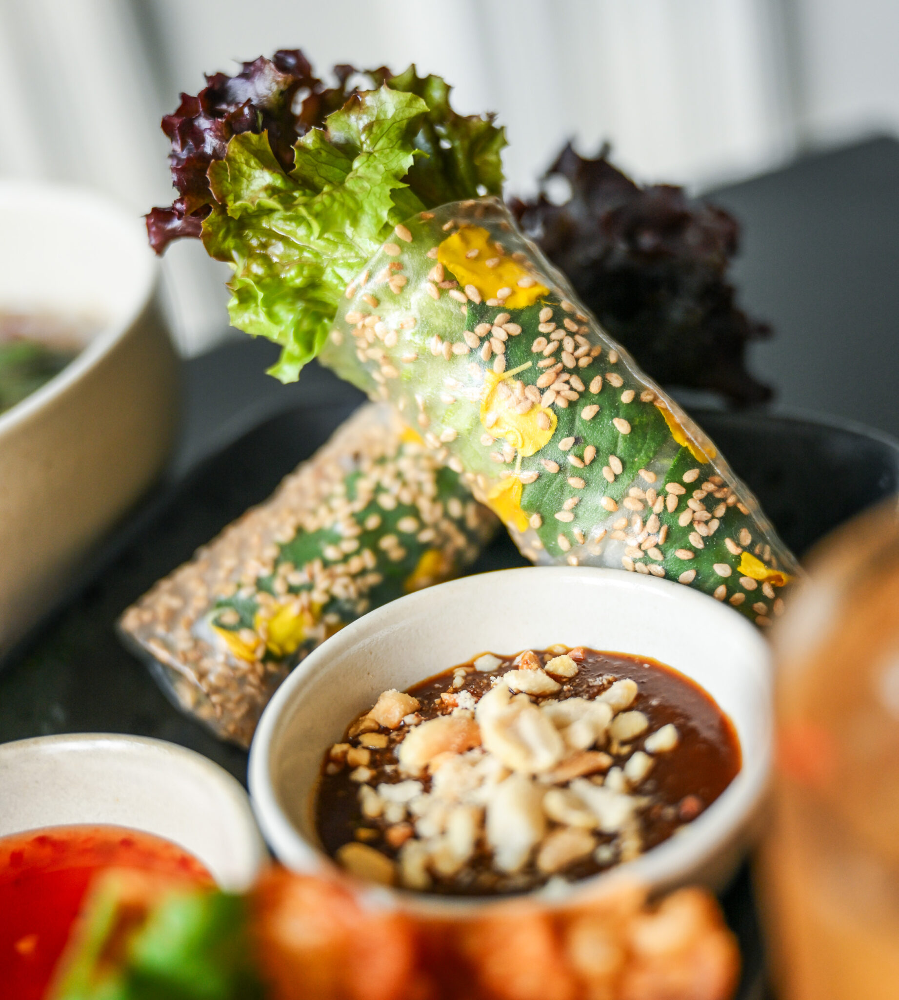
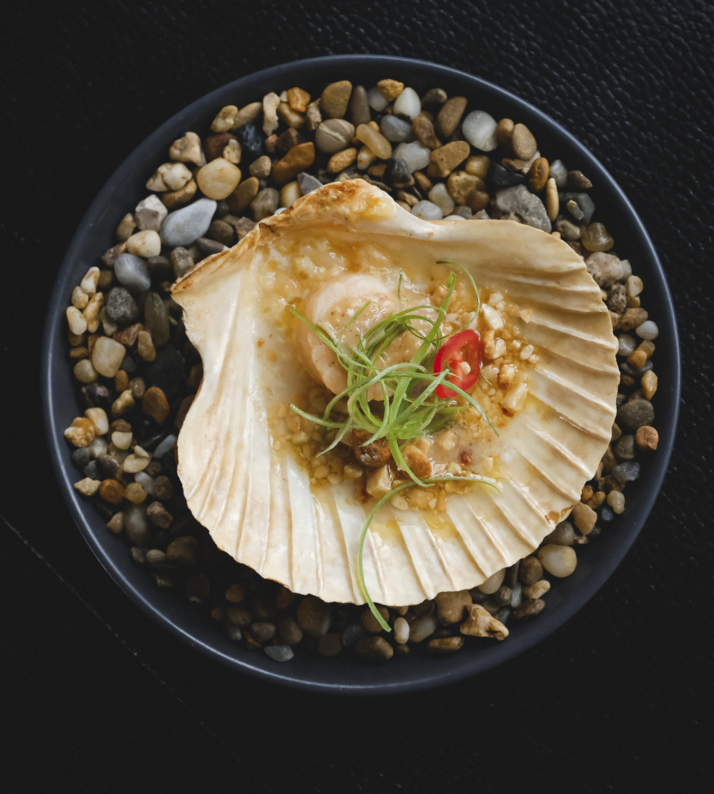
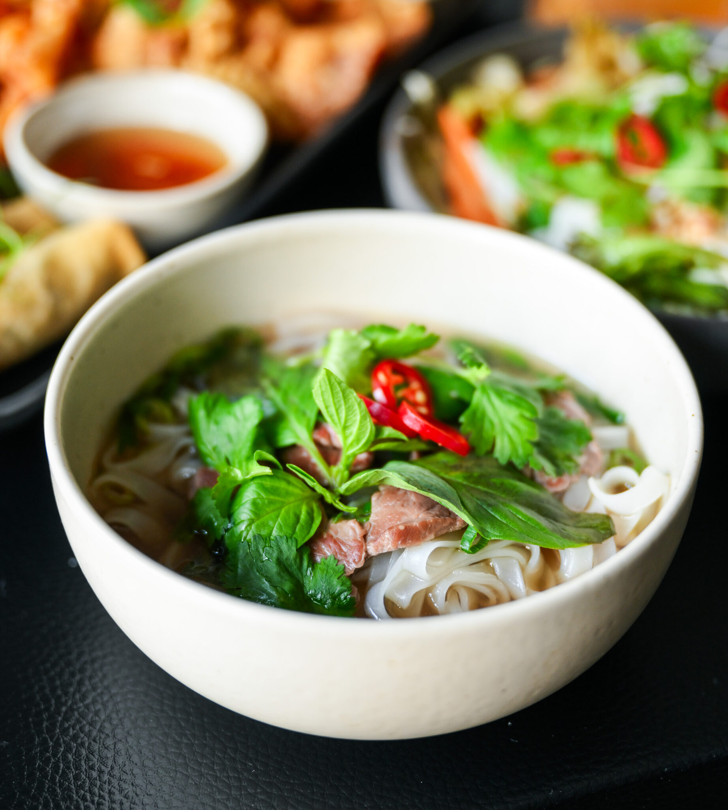
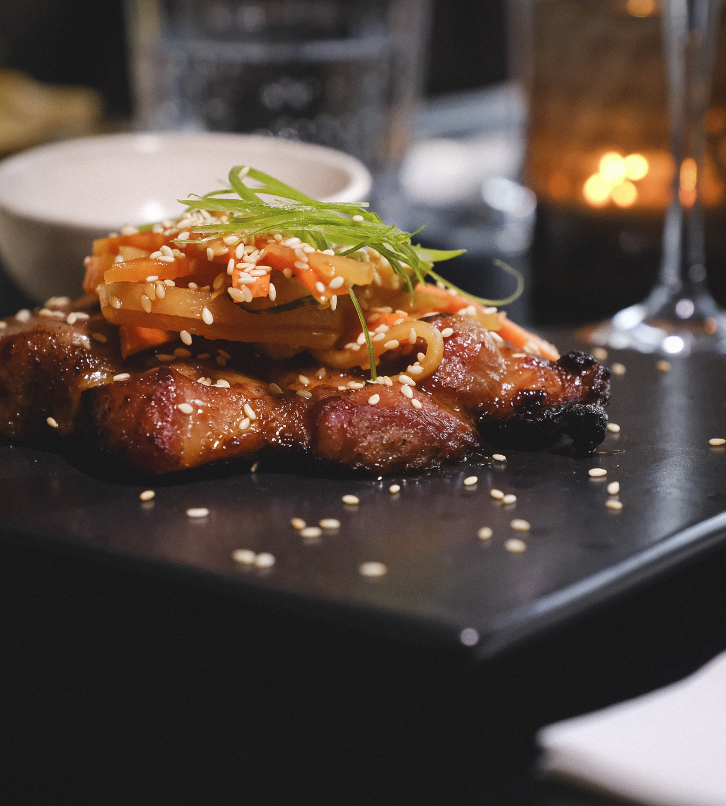
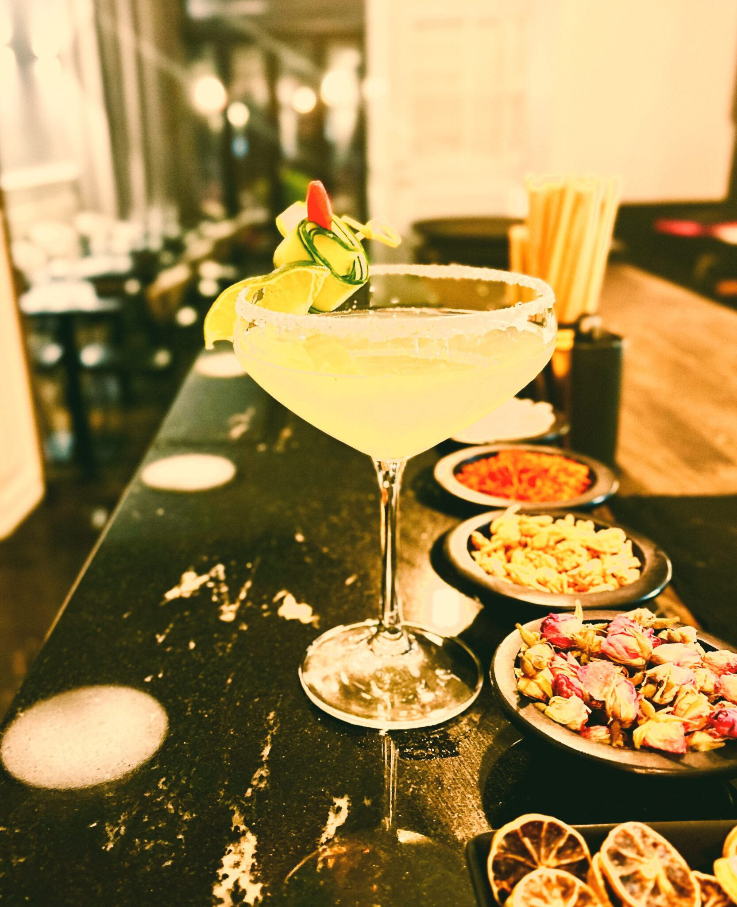
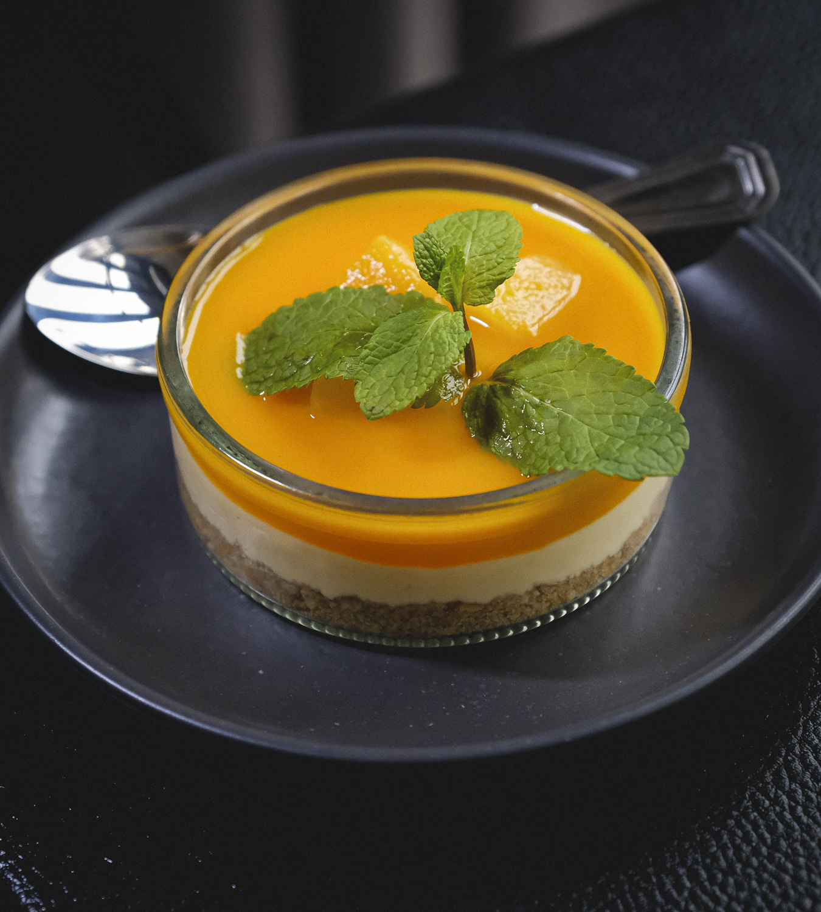

Oplev Saigons farverige smage i hjertet af København
Besøg Københavns vietnamesiske bistro og gå på opdagelse i vores udvalg af tapasretter, nøje tilberedt efter traditionelle opskrifter — som var du på besøg i Saigons gastronomiske hjemmekøkkener.









En Saigoner helt ind til hjertet!
Lad os sammen begynde eventyret og fortællingen om folket fra Saigon med deres unikke karakter og facon — den samme varme og entusiasme oplever du ved Kartoffelrækkerne i København Ø.
Entusiastiske og glade
Altid klar til at hjælpe og byde gæster velkommen med smil og venlighed.
Kreativt sind
En levende blanding af tradition og innovation — fra gadekunst til madlavning.
Madelskere
Elsker mad og er inspireret af Saigons rige og varierede gadekøkken.
Sociale værter
Hjertelige, nærværende og nemme at føle sig hjemme hos fra første minut.
Tålmodighed & udholdenhed
Kvalitet tager tid — både i livet og i de simrende gryder i køkkenet.
Passion & dedikation
Hver tallerken laves med stolthed, kærlighed og respekt for lokal kultur.
“Det betyder noget for mig og for smagen, at vi tillader mad at tage den tid det tager for at opnå den helt autentiske smag.”
Hvad vores gæster siger
Smagsoplevelser, nærvær og hygge delt af vores gæster i København Ø.